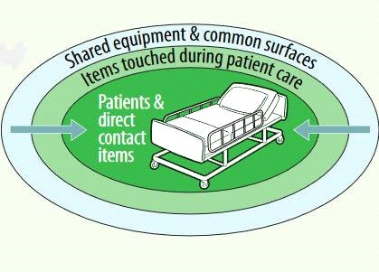
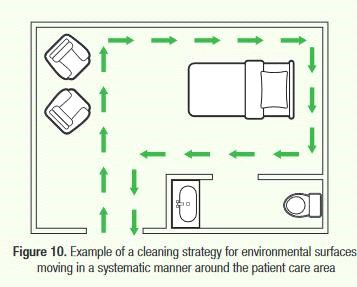
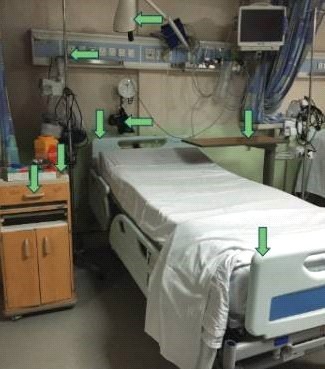
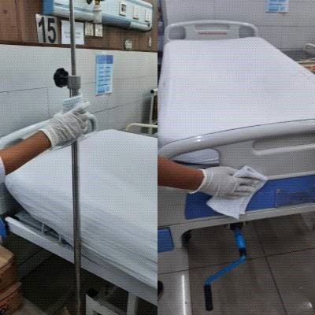

Infection prevention and control (IPC) is the mainstay of the
healthcare system, especially
in
the contemporary era of infectious diseases, which concerns both
patients and healthcare
workers. The routine training of healthcare staff regarding IPC
practices has been quite
challenging in public sector hospitals of developing countries
for quite a few reasons,
which
became even more difficult in the days of COVID-19 when it was
not suitable to gather
healthcare workers for training purposes. At that time, it was
realized that there must be
some way to ensure the access and all-time availability of basic
IPC guidelines to all the
HCWs, which they may reach out to as per their point of care
needs.
The IPC team of Lahore General Hospital developed the infection
prevention and control
mobile
application (named IPC Guidelines) to carry out the concept, and
made an effort to compile
all
the basic concepts of infection prevention and control
guidelines, taken from various
authentic sources (CDC, NHSN, WHO, IPC manual by Dr. Nizam
Damani and others), at one place.
This mobile application is easily downloadable, user-friendly,
and an attempt to provide
access to fundamental IPC principles in a precise way.
The Lahore General Hospital forum tends to make it a service for
the struggling healthcare
system of Pakistan and other developing countries.
We intend to update this mobile App from time to time, with
evolving infectious diseases and
IPC practices. We will welcome the comments and suggestions of
the users which may help
improve it further.
Dr. Amina Asif
MBBS, M.Phil (Microbiology), Ph.D. Scholar
Assistant Professor of Pathology
Focal person, IPC Committee
PGMI/LGH/AMC
Post Graduate
Medical Institute / Lahore General
Hospital /
Ameer-ud-Din Medical College, Lahore, Pakistan
The healthcare facilities, especially the public sector
hospitals, in underdeveloped nations
are inadequately equipped, and the burden of
healthcare-associated infections (HCAIs) makes
matters worse. The importance of infection prevention and
control (IPC) practices cannot be
denied to lessen the burden of HCAIs.
Now when the world has been facing the worst pandemic of
COVID-19, and other infectious
diseases one after the other, the knowledge and comprehension of
the core IPC practices are
the ultimate need of the hour. The subject is very broad, making
it challenging to fully
understand. Therefore, it is imperative to present certain key
ideas in a way that is simple
to access and comprehend.
I commend the Lahore General Hospital team for coming up with
the concept for this infection
prevention and control mobile application in the hopes that it
will be a helpful resource
for
medical professionals, nurses, paramedics, housekeeping staff,
and anyone else who is eager
to
learn and understand the fundamentals of IPC practices.
Professor Dr.
Sardar Muhammad Al Fareed
Zafar
MBBS, FSPS, FRCOG (UK), MCE (Monash University Australia)
Fellow in Reproductive Endocrinology (NUS Singapore)
Professor & Head Department of Obstetrics and Gynecology
It gives me great pleasure to write this message on the occasion
of the launch of a mobile
application for infection prevention and control guidelines.
This is a commendable
initiative
by the MSDS and infection control department of Lahore General
Hospital, as it will benefit
not only health care personnel but the general population as
well. All crucial components,
such as hand hygiene and personal protective measures, have been
addressed clearly and
succinctly. Furthermore, the use of illustrations to express all
crucial and necessary
information adds clarity to the material.
According to the recent World Health Organisation report, it has
been estimated that out of 100 patients hospitalized, seven will
be infected with healthcare-associated infections (HAIs) and the
risk of acquiring HAI is up to 20 times higher in low- and
middle-income countries. In addition, deaths are increased two
to threefold when infections are resistant to antimicrobials.
This is an underestimate due to the lack of surveillance in most
healthcare facilities. HAls not only drain valuable health
service resources in terms of additional costs but also have an
impact on the length of stay in the hospital as well as
additional nursing and medical time. In addition, especially in
low- and middle-income countries, the cost and impact of Hals to
individuals and their families can be devastating due to loss of
income, indirect cost, and burden to family members in terms of
time lost from work in caring for the affected individual. The
Covid -19 pandemic shows that both patients and health workers
can be at high risk of being infected with SARS-CoV-2 during
health care delivery and need to be protected. Therefore, the
implementation of effective Infection Prevention and Control
(IPC) is now a major priority on a global basis. Unfortunately,
due to various reasons, implementation of even basic IPC
practices can be challenging, especially in low- and
middle-income countries. I am delighted that Dr. Amina Asif and
the MSDS department have developed the IPC App for Lahore
General Hospital, Pakistan. This is a major achievement because
the App is simple to use and is also available in Urdu. It is
available on mobile devices which allows not only easy
accessibility to implement good IPC practice at the point of
care by health workers but also helps update IPC guidelines and
procedures regularly. To ease implementation, IPC procedures are
illustrated using images based on local guidelines. I am
confident that the availability of the IPC App supplemented by
teaching and practical training in IPC will help the hospital to
implement good IPC practices at the point of care and will not
only reduce HAIs but also help protect health workers and
visitors from other infections.
Prof. Nizam Damani
MBBS, MSc, FRCPath., FRCPI, CIC, DipHIC
Dr. Amina Asif (Lead
Facilitator)
MBBS, M.Phil (Microbiology), CMT (UHS), Ph.D. Scholar
Assistant Professor of Pathology
Focal Person Infection Control Committee
PGMI/ LGH/AMC, Lahore
Prof. Dr. Farooq Afzal
MBBS, MD (USA), FCPS, FRCS (UK), FACS, MHPE
Ex-Professor and Head Department of Surgery
PGMI/LGH/AMC, Lahore
Prof. Dr. Ghias-un-Nabi Tayyab
MBBS, MD (USA), FCPS Internal Medicine, MRCP (UK), FRCP(EDIN),
AGAF(USA)
Head Department of Medicine
PGMI/LGH/AMC, Lahore
Prof. Dr. Jodat Saleem
MBBS, MCPS, FCPS Anesthesia
Head Department of Anesthesia, ICU and Pain Management
In charge, Infection Control Committee
PGMI/LGH/AMC, Lahore
Dr. Muhammad Irfan Malik
MBBS, FCPS Pulmonology, FRCP (Glasg), CMT (UHS)
Associate Professor of Pulmonology
In charge MSDS program
PGMI/LGH/AMC
Dr. Ahmad Naeem
MBBS, MS Surgery, CMT (UHS)
Assistant Professor of Surgery
PGMI/LGH/AMC, Lahore
Sister Nazneen
Head sister MSDS and IPC department,
LGH, Lahore
Muhammad Hussnain
In charge CSSD dept.
LGH, Lahore
Any medical and health related information and materials contained
on this website are not
intended as professional medical advice and is being provided for
general information purpose
only. This website only contains compilation of guidelines from
reliable resources (source
provided with every guideline and after getting permission where
required) and assumes no
responsibility for accuracy of any guidelines in first place. And it
should also be taken into
consideration that many guidelines stand true for a specific topic,
only some are compiled in
this website. We shall not be liable for any type of damage that may
incur from any part of
this website.
1. Proceed from cleaner to dirtier areas to avoid spreading dirt and
microorganisms.
2. During terminal cleaning, clean low-touch surfaces before
high-touch surfaces.
3. Clean patient areas (e.g., patient zones) before patient
toilets.
4. Within a specified patient room, terminal cleaning should start
with shared equipment and common surfaces, then proceed to surfaces
and items touched during patient care that are outside of the
patient zone, and finally to surfaces and items directly touched by
the patient inside the patient zone.
5. High-touch surfaces outside the patient zone should be cleaned
before the high-touch surfaces inside the patient zone.
6. Clean general patient areas not under transmission-based
precautions before those areas under transmission based precautions.

Proceed From High to
Low (Top To Bottom)
Proceed from high to low to prevent dirt and microorganisms from
dripping or falling and contaminating already cleaned areas:
• cleaning bed rails before bed legs
• cleaning environmental surfaces before cleaning floors
• cleaning floors last to allow collection of dirt and
microorganisms that may have fallen
Proceed in a
Methodical, Systematic Manner
1. Proceed in a systematic manner to avoid missing
areas—for example, left to right or clockwise
2. Immediately Attend to Body Fluid Spills

High Touch Surfaces
1. Bedrails.
2. IV poles.
3. Sink handles.
4. Bedside tables.
5. Counters where medications and supplies are prepared.
6. Edges of privacy curtains.
7. Patient monitoring equipment (e.g. keyboards, control
panels).
8. Transport equipment (e.g. wheelchair handles).
9. Call bells.
10. Doorknobs.
11. Light switches.

Example of high touch surfaces in a specialised
patient area.
Care and Storage of
Supplies, Equipment, and Personal Protective Equipment.
Environmental cleaning supplies and equipment quickly become
contaminated during their use. Regularly reprocess all reusable
items (i.e., thoroughly clean, disinfect, and dry). These are the
best practices for reprocessing reusable cleaning supplies and
equipment.
1. All reusable supplies and equipment (e.g., buckets, rubber
gloves) should be reprocessed directly after use in a
transmission-based precaution area or when soiled with blood or body
fluids.
2. Thoroughly clean, disinfect, and rinse equipment such as buckets
and containers whenever solution is replaced or daily. Store them
upside down to allow complete drying.
3. Launder mop heads, floor cloths, and soiled cleaning cloths at
least daily (e.g., at the end of the day/shift) and allow them to
fully dry before storage and reuse.
4. Reprocess all reusable supplies and equipment in a dedicated area
that is not used for other purposes (i.e. reprocessing of cleaning
equipment should never be conducted in handwashing sinks).
5. Reprocess reusable supplies, equipment, and PPE as:
• Immerse in detergent solution and use mechanical action (e.g.,
scrubbing) to remove soil.
• Disinfect by: fully immersing the items in disinfectant solution
for the required contact time and rinsing with clean water to remove
residue.
• Allow to fully dry. Lay items to dry in a clean and dry area to
prevent recontamination, Position mops with the head up to allow the
mop head to fully dry.
1. Thoroughly clean all surfaces with detergent and water.
2. Thoroughly wet (soak) a fresh cleaning cloth in the environmental
cleaning solution.
3. Fold the cleaning cloth in half until it is about the size of
your hand. This will ensure that you can use all of the surface area
efficiently (generally, fold them in half,
then in half
again, and this will create eight sides).
4. Wipe surfaces using the general strategies as above (e.g., clean
to dirty, high to low, systematic manner), making sure to use
mechanical action (for cleaning
steps) and making sure to
that the surface is thoroughly wetted to allow required contact time
(for disinfection steps).
5. Regularly rotate and unfold the cleaning cloth to use all of the
sides.
6. When all of the sides of the cloth have been used or when it is
no longer saturated with solution, dispose of the cleaning cloth or
store it for reprocessing.
7. Repeat process from step 1:

For all environmental
cleaning procedures, these are the best practices for
environmental cleaning of surfaces:
1. Use fresh cleaning cloths at the start of each cleaning
session (e.g., routine daily cleaning in a general inpatient
ward).
2. Change cleaning cloths when they are no longer saturated with
solution, for a new, wetted cloth. Soiled cloths should be
stored for reprocessing.
3. For higher-risk areas, change cleaning cloths between each
patient zone (i.e., use a new cleaning cloth for each patient
bed). For example, in a multi-bed intensive
unit, use a
fresh cloth for every bed/incubator.
4. Ensure that there are enough cleaning cloths to complete the
required cleaning session.
Caution :
Never double-dip cleaning cloths into portable containers (e.g.,
bottles, small buckets) used for storing environmental cleaning
products (or solutions).
1. Never shake mop heads and cleaning cloths—it disperses dust
or droplets that could contain microorganisms.
2. Never leave soiled mop heads and cleaning cloths soaking in
buckets.
1. Immerse the mop or floor cloth in the bucket with environmental
cleaning solution and wring out.
2. Mop in a figure-eight pattern with overlapping strokes, turning
the mop head regularly (e.g., every 5-6 strokes).
3. After cleaning a small area (e.g., 3m x 3m), immerse the mop or
floor cloth in the bucket with rinse water and wring out.
4. Repeat process from step 1:
5. Use wet floor or caution signs to prevent injuries.
6. Mop from cleaner to dirtier areas.
7. Change mop heads/floor cloths and buckets of cleaning and
disinfectant solutions as often as needed (e.g. when visibly soiled,
after every isolation room, every 1-2
1.
Cleaning Procedures Summary for
General Outpatient Areas (Adult)
Area
Frequency
Products/techniques
Additional guidance
Waiting/Admission area
(adult)
Daily
Clean
(neutral detergent
and water):
• high-touch surfaces
• floors
In addition, clean low-touch
surfaces on a scheduled basis
(e.g., weekly)
Consultation room /examination
areas (Adult)
At least twice per day
Clean
(neutral detergent
and water):
• high-touch surfaces
Last clean of the day: clean the
entire floor with neutral
detergent and water.
Clean low-touch surfaces on a
scheduled basis (eg weekly)
Minor
operative/ procedure room
Before and after
(i.e., between)
every procedure
Clean and
disinfect:
• any surface visibly soiled
with blood or body fluids
• high-touch surfaces in the
patient zone
• floors in the patient zone
Last clean of the day
clean and disinfect:
• other high-touch surfaces
• low-touch surfaces
• handwashing sinks
• scrub/sluice areas
• the entire floor
2.
Cleaning Procedure Summaries for
General Inpatient Areas
Type of Clean
Frequency
Products/techniques
Additional guidance
Routine
clean
At least Daily
Clean
(neutral detergent
and water):
• High-touch surfaces in the
patient zone
• Handwashing sinks
• Floors
Clean low-touch surfaces on a
scheduled basis
(e.g., weekly)
1. Remove soiled/used personal
care items (e.g., cups, dishes)
for
reprocessing or disposal.
2. Remove facility provided
linens
for reprocessing or disposal
3. Inspect window treatments. If
soiled, clean blinds on-site,
and
remove curtains for
laundering.
4. Reprocess all reusable
(noncritical) patient care
equipment
5. Clean and disinfect all low-
and high-touch surfaces,
including
those that may not be accessible
when the room/area was occupied
(e.g., patient mattress,
bedframe, tops of shelves,
vents), and floors.
6. Clean (scrub) and disinfect
handwashing sinks.
3. Cleaning Procedure Summaries for
Patient Area Toilets
Area
Frequency
Products/techniques
Additional guidance
Toilets
for
general inpatient
and outpatient
areas; frequently
used by visitors,
family members
At least once daily (private
patient room)
At least twice daily (public/
shared toilets)
and as needed
Clean and
disinfect:
• high-touch/frequently
contaminated surfaces
Ð handwashing sinks
Ð faucets
Ð handles
Ð toilet seat
Ð door handles
• floors
• any surface visibly
soiled with blood or
body fluids
Clean low-touch surfaces on a
scheduled basis
(e.g., weekly)
4. Cleaning Procedure Summaries for
Patient Area Floors
Area
Frequency
Products/techniques
Additional guidance
Floors in
general inpatient and outpatient
areas, always cleaned last after
other environmental surfaces
At least Once Daily
Clean (neutral detergent and
water):
• clean to dirty, systematic manner
(figure-eight pattern, regularly
rinse in rinse bucket)
Floors may require, depending on the
risk-level in a specific patient
care area:
• more frequent cleaning
• use of a disinfectant
5.
Cleaning Procedure Summaries for
Operating Room
Records of previous evening terminal
clean required; if not or if no
surgeries on the day prior, perform
terminal clean (as below)
Before and
after every procedure
Clean and disinfect:
• high-touch surfaces (e.g., light
switches, door knobs) outside
surgical field
• any surface visibly soiled with
blood or body fluids
• all surfaces and noncritical
equipment and the floor inside the
surgical field
Remove all
used linen and surgical drapes,
waste (including used suction
canisters, ¾ filled sharps
containers), and kick buckets, for
reprocessing or disposal.
Portable noncritical (e.g.,
compressed gas tanks, x-ray machine)
equipment should be thoroughly
cleaned and disinfected before and
after each procedure
After last
procedure
Clean and disinfect:
• all surfaces and noncritical
equipment in the operating room
• the entire floor
• any surface visibly soiled with
blood or body fluids
• scrub and utility areas/sinks
Take care to
move the operating table and any
mobile equipment to make sure that
the floor areas underneath are
thoroughly cleaned and disinfected
Clean and disinfect low-touch
surfaces, (e.g., the insides of
cupboards and ceilings/walls) on a
scheduled basis (e.g., weekly)
6.
Cleaning Procedure Summaries for ICU
(adult, pediatric, neonatal)
Frequency
Products/techniques
Additional guidance
Twice daily and as needed
Clean and
disinfect:
• high-touch surfaces (only
outside of neonatal incubator when
occupied)
Clean:
• floors with neutral detergent and
water
1. Remove
soiled/used personal care items
(e.g., cups, dishes) for
reprocessing or disposal.
2. Remove facility-provided
linens for reprocessing or disposal.
3. Inspect window treatments. If
soiled, clean blinds on-site, and
remove curtains for laundering.
4. Reprocess all reusable
(noncritical) patient care
equipment.
5. Clean and disinfect all low-
and high-touch
surfaces, including those that may
not be accessible when the room/area
was occupied (e.g., patient
mattress, bedframe, tops of shelves,
vents), and floors.
6. Clean (scrub) and disinfect
handwashing sinks.
Pay special attention to
terminal cleaning of incubators.
Change filters in incubators
according to manufacturer’s
instructions, when wet or if neonate
was on contact precautions (during
terminal clean).
Last clean of the day: clean the
entire floor with neutral detergent
and water.
Clean low-touch surfaces on a
scheduled basis (eg weekly)
7.
Cleaning Procedure Summaries for General
Procedure Areas (Radiology, Endoscopy)
Frequency
Products/techniques
Additional guidance
Before and after every procedure
Clean and
disinfect:
• any surface that is visibly soiled
with blood or body fluids
• high-touch surfaces inside the
patient zone
Ð procedure table/station
Ð counter tops
Ð external surfaces of
fixed equipment
• floors inside the patient zone
Remove disposable equipment and
reprocess reusable noncritical
patient care equipment
After last
patient of the day (terminal clean)
Clean and disinfect:
• all high-touch and low-touch
surfaces
• entire floor
Move the
procedure table and other portable
equipment to clean and disinfect the
entire floor area.
Handwashing sinks should be
thoroughly cleaned (scrubbed) and
disinfected
8.
Procedure Summaries for Labor and
Delivery Wards/Rooms
Frequency
Products/techniques
Additional guidance
Before and after (i.e., between)
every procedure
Clean and
disinfect:
• any surface that is visibly soiled
with blood or body fluids
• high-touch surfaces inside the
patient zone
• floor inside the patient zone
Remove soiled linens and waste
containers for disposal/
reprocessing
After last
delivery of the day (terminal clean)
Clean and disinfect:
• any surface that is visibly soiled
with blood or body fluids
• all high-touch and low-touch
surfaces
• entire floor
Move the
procedure table and other portable
equipment to clean and disinfect the
entire floor area.
Handwashing sinks should be
thoroughly cleaned (scrubbed) and
disinfected
9.
Cleaning Procedure Summaries for
Emergency Department
Area
Frequency
Products/techniques
Additional guidance
Waiting/Admission area
At least daily and as needed (e.g.,
visibly soiled, blood/body fluid
spills)
Clean (neutral
detergent and water):
• high-touch surfaces and low touch
surfaces
• floors
none
Consultation room /examination areas
After each
event/ case and at least twice per
day and as needed
Clean and disinfect:
• high-touch surfaces
Last clean of
the day: clean and disinfect the
entire floor and low touch surfaces
Before and
after (i.e., between) every
procedure
Clean and disinfect:
• any surface visibly soiled with
blood or body fluids
• high-touch surfaces in the patient
zone
• floors in the patient zone
Last clean of
the day clean and disinfect:
• other high-touch surfaces
• low-touch surfaces
• handwashing sinks
• scrub/sluice areas
• the entire floor
10.
Cleaning Procedure Summaries for
Hemodialysis Stations/Areas
Frequency
Products/techniques
Additional guidance
After each event/case
Clean and
disinfect:
• any surface that is visibly soiled
with blood or body fluids
• all surfaces of the dialysis
station area
Ð bed
Ð chair
Ð countertops
Ð external surfaces of the
machine
• floor inside the patient zone
Remove
disposable patient care items/waste
and reprocess reusable patient care
equipment per below
Take care to allow enough
contact time before the next
subsequent use of the station/area
After last
case of the day (terminal clean)
Clean and disinfect:
• any surface that is visibly soiled
with blood or body fluids
• all surfaces of the dialysis
station/area
• high-touch surfaces in the
area/room housing hemodialysis
stations
• entire floor
Move the
procedure table and other portable
equipment to clean and disinfect the
entire floor area
In addition, clean low-touch
surfaces on a scheduled basis (e.g.,
weekly)
11.
Cleaning Procedure Summaries for
Transmission-Based Precaution /
Isolation Wards
Area
Frequency
Products/techniques
Additional guidance
Airborne
Precautions
At least daily and as needed (e.g.,
visibly soiled, blood/body fluid
spills)
Clean (neutral
detergent and water):
• high-touch surfaces
• floors
Adherence to
required PPE and additional entry/
exit procedures.
Clean low-touch surfaces on a
scheduled basis (e.g., weekly)
Droplet and/
or contact precautions
Twice daily and as needed
Clean and disinfect:
• any surface visibly soiled with
blood or body fluids
• high-touch surfaces
• floors
Cleaning staff
must wear required PPE
Dispose of or reprocess
cleaning supplies and equipment
immediately after cleaning
Last clean of the day: clean
and disinfect the entire floor and
low touch surfaces
Patient
diagnosed with C. difficile on
droplet and contact precautions
Twice daily and as needed
Clean and disinfect (two step
process required and sporicidal
agent):
• any surface visibly soiled with
blood or body fluids
• high-touch surfaces in the patient
zone
• floors
Two-step
process required (do not use
combined detergent disinfectant):
1. Rigorous mechanical cleaning
process (e.g., using friction).
2. Disinfectant with sporicidal
properties, for example:
• sodium hypochlorite solution
(e.g.,0.1% – 0.5%)
• hydrogen peroxide 4.5%
Dedicated
noncritical
patient care equipment for patients
on
transmission based
precautions
Consistent with cleaning
frequency for patient zone, before
and after
each use and as needed
Products based on the risk level of
the patient care area
Reprocess
(i.e., clean and disinfect)
dedicated equipment after patient
is discharged or transferred
(terminal clean)
Conduct terminal cleaning of all
noncritical patient care equipment
in dedicated area
1. Remove
soiled/used personal care items
(e.g., cups, dishes) for
reprocessing or disposal.
2. Remove facility-provided
linens for
reprocessing or disposal.
3. Always remove privacy
curtains and window coverings for
laundering (curtains, blinds).
4. Reprocess all reusable
(noncritical) patient care
equipment in sluice rooms.
5. Clean and disinfect all low-
and high-touch surfaces, including
those that may not be accessible
when the room/area was occupied
(e.g., patient mattress,
bedframe, tops of shelves, vents),
and floors.
6. Clean (scrub) and disinfect
handwashing sinks.
Airborne precautions:
Cleaning staff must wear
required
PPE.
Keep the door closed during the
environmental cleaning process
(ventilation requirement).
12.
Cleaning Procedure Summaries for
Noncritical Patient Care Equipment
Area Description
Frequency
Products/techniques
Additional guidance
Shared
equipment (including transport
equipment - e.g., wheelchairs, bed
pans etc)-shared between patients
Before and after every patient, and
as needed
Clean and
disinfect: Select a compatible
disinfectant
Disinfect
bedpans with a washer-disinfector or
boiling water instead of a chemical
disinfection process
Dedicated
equipment - when dedicated to a
particular patient during their stay
Consistent with cleaning frequency
for patient area, and as needed
Products based on the risk level of
the patient care area
Shared and
dedicated equipment
At patient discharge/transfer
Clean and disinfect:
• select a compatible disinfectant.
Conduct
terminal cleaning of all noncritical
patient care equipment in dedicated
area.
Making a Dilute Solution from a Concentrated Solution
Chlorine in liquid bleach comes in different concentrations. Any
concentration can be used to make a dilute chlorine solution by
applying the following formula:
[% chlorine in liquid bleach]
[% chlorine desired]
− 1 = Total parts of water for each part of bleach
Example:To make a 0.1 % chlorine solution from 1% bleach:
[1% / 0.1%] − 1 = 10 − 1 = 9 parts water for each part
bleach
Therefore, you must add 1 part 1% bleach to 9 parts
water to make a 0.1% chlorine solution.
Source: CDC(NHSN) ;Bloodstream Infection Event (Central Line-Associated Bloodstream
Infection and Non-central Line Associated Bloodstream Infection)(2022)
صاف جگہ سے گندی جگہ کی طرف پیش قدمی کریں تاکہ دھول اور جراثیم نہ پھیلیں
ٹرمینل صفائی کےدوران کم استعمال ھو نےوالی سطحوں کو پھلے اور زیادہ استعمال ھونےوالی سطحوں
کوبعدمیں صاف کریں
مریضوں کی وارڈ کو پھلے اور بیت الخلاء کی صفائی بعد میں کریں
مخصوص مرض والے مریض کے کمرے میں ٹرمینل صفائی کے دوران پہلے مشترکہ آلات اور عام سطحوں سےآغاز
کریں پھر مریض کی دیکھ بھال کےدوران چھوئی جانےوالی اشیاء کو پہلے اور مریض کے براہ راست چھوئی
گئ سطحوں اور چیزوں کو بعد میں صاف کریں
مریض کے کمرے میں موجود زیادہ استعمال ہونے والی سطحوں کو بعد میں اور مریض کے کمرے کے باہر
زیادہ استعمال ہونے والے سطحوں کو پہلے صاف کریں
عام مریضوں کے استعمال میں أنے والی جگہوں کو پہلے اور پھیلنے والی بیماروں کی جگہ کو بعد میں
صاف کریں
اوپر سے
نیچے کی جانب پیش رفت
اوپر سے نیچے کی طرف پیش رفت کریں تاکہ دھول اور جراثیم اوپر سے نیچے کی گر کر ماحول کوآلودہ نہ
کریں
مریض کے بیڈ کے اطراف کو پہلے اور باقی بیڈ کو بعد میں صاف کریں
فرش کی صفائی سے قبل دیواروں کی صفائی کریں
صفائی کے دوران دھول اور جراثیم آلودہ فرش صاف کریں
منظم طریقہ
کار سے پیش رفت
کریں
.منظم طریقہ کار سے پیش رفت کریں تاکہ کو ئی بھی جگہ نہ چھٹے ۔جیسے الٹے ہاتھ سے سید ھے ہاتھ کئ
طرف ۔
خون اور جسمانی سیال کے پھیلاو کئ صورت میں فوری صفائی کریں
زاتی اور ماحولیاتی صفائی کے آ لات کی دیکھ بھال اور
ذخیرہ
دوبارہ
قابل استعمال اشیاء
اور آ لات کو مخصوص جگہ پر جراثیم سے پاک کریں جو کسی اور کام کے لیے استعمال نہ ہوتا ہو
(جیسے کہ آ لات کی صفائی ہاتھ دھونے والی جگہ پر نہیں ہونا چاہیے)
خون یا جسمانی مادوں سے گندے ہونے کے بعد دوبارہ قابل استعمال اشیاء کوفورا صاف اور جراثیم سے
پاک کریں
جب بھی محلول تبدیل کیا جائے یا روزانہ بنایا جائے تو بالٹیوں اور کنٹینرز کو اچھے طریقے سے دھو
کر صاف اور جراثیم سے پاک کریں اور انہیں الٹا کر کے رکھیں تا کہ یہ مکمل طور پر خشک ہو سکیں۔
اشیاء کو مکمل طور پر خشک ہونےدیں
دوبارہ قابلِ استعمال اشیاء اور آ لات کو مخصوص جگہ پر جراثیم سے پاک کریں جو کسی اور کام کے
لیے استعمال نہ ہوتا ہو (جیسے کہ آ لات کی صفائی ہاتھ دھونے والی جگہ پر نہیں ہونی چاہیے)
آ لات کو ڈٹرجنٹ کے محلول میں ڈالیں اور مکینیکل طریقے مثلاً (رگڑنا)اور گند کو صاف کریں
جراثیم سے پاک کریں:آ لات کو مقررہ وقت تک جراثیم کش محلول میں ڈوبا رہنے دیں اور صاف پانی سے
دھو لیں
مکمل طور پر خشک ہونے دیں اشیاء کو صاف اور خشک جگہ پر رکھیں تاکہ دوبارہ آلودہ نہ ہوں
ڈٹرجنٹ اور پانی سے تمام سطحوں کو مرحلہ وار صاف کریں ۔
جراثیم کش محلول کے ساتھ صاف کپڑے کو اچھی طرح گیلا کریں
کپڑے کو اپنے ہاتھ کی مناسبت سے طے لگائیں تاکہ تمام اطراف کی صفائی اچھے طریقے سے ہو سکے
اوپر بیان کردہ اقدامات کے مطابق منظم طریقے سے صاف سے گندی جگہ اور اوپر سے نیچے کی طرف
صفائی کریں اور اس بات کو یقینی بنائیں کہ تمام سطح مکمل طور پر جراثیم کش محلول سے مقررہ وقت
تک تر ہو۔
صفائی کرنے والے کپڑے کی تمام تہوں کو کھول کر صاف کریں تاکہ تمام اطراف سے کپڑا استعمال ہو۔
جب کپڑے کی تمام اطراف استعمال ہو جائیں یا وہ خشک ہو جائے تو اس کو دوبارہ استعمال کرنے کے
لیے محفوظ کر لیں،صفائی کے احتتام پر محفوظ کردہ کپڑے کو ڈیٹرجنٹ اور پانی سے دھو کر محفوظ کر
لیں ۔
ماحولیاتی صفائی کے عمل کا
بہترین طریقہ کار
عام داخلی وارڈ میں روزانہ معمول کی صفائی کے لیے صاف
ستھرا کپڑا استعمال کریں
جب صفائی والا کپڑا خشک ہو جائے تو اسے نئے گیلے کپڑے سے تبدیل کریں خشک کپڑے کو دوبارہ
استعمال کے لیے محفوظ کر لیں۔
انتہائی نگہداشت والے مریضوں کے بستر کی صفائی کے دوران ہر دفعہ صفائی کا کپڑا تبدیل کریں(ہر
مریض کے لیے الگ کپڑا استعمال کریں)
صفائی سے قبل اس بات کو یقینی بنائیں کہ آپ کے پاس مطلوبہ مقدار یں صفائی کے کپڑے دستیاب ہوں
۔
احتیاط
ڈٹرجنٹ اور پانی سے تمام سطحوں کو مرحلہ وار صاف کریں ۔
پچارے/پونچے کو ادھر ادھر بے مقصد مت ہلائیں اس سے جراثیم پھیلتے ہیں
پچارے /پونچے کو بالٹی میں ڈبویں جس میں صفائی کا محلول ہوں اور اسے اچھی طرح نچوڑیں۔
صفائی والے پچارے/پونچے کو آٹھ کا ہند سہ بناتے ہوئے لگاتے جانیں۔پچارے/پونچے کے سر کوباقدگی
سے موڑتے رہیں۔
چھوٹے ایریا 3×3 میٹرکی صفائی کےبعدپچارے کو پانی میں ڈبوکردھویں اور نچوڑ کر نکال لیں۔
اس پورے مرحلے کو مرحلہ 1 سے دہرائیں ۔
گیلے فرش پر احتیاط کا نشان لگائیں تاکہ کوئی پھسل کر زخمی نہ ہو
پچارے/پونچے کو صاف سے گندے ایریا کی طرف لگائیں ۔
صفائی کے آخر میں اور ہر آیسولییشن روم کی صفائی کے بعد یا جب پچارا /پونچا ظاہری طور پر گندا
ہو تو پچارے /پونچے کو اور جراثیم کش محلول کو ضرورت کے مطابق بدلتے رہیں۔
مریض کے لیے استعمال ہونے والی سطحوں کو ڈیٹرجنٹ اور
پانی سے صاف کریں
کم استعمال ہونے والی سطحوں کو شیڈول کے مطابق صاف کریں جیسے (ہفتہ وار)
ڈاکٹر آ فس/طبی معائنے کا کمرہ
روزانہ کم از کم دو بار
بار بار استعمال ہونے والی سطحیں ڈیٹرجنٹ اور پانی
سے
صاف کریں
دن کے آ خر میں صفائی:سارے فرش کو صابن اور پانی سے صاف کریں اور کم
استعمال
ہونے والی سطحوں کو شیڈول کے مطابق صاف کریں
جیسا کہ ہفتہ وار
ڈریسنگ روم اور پروسیجر روم
ہر پروسیجر سے پہلے اور بعد میں
ایسی سطح جس پر خون یا کوئی جسمانی رطوبت لگی ہو:اور
بار بار استعمال ہونے والی سطح اور مریض کے استعمال میں آ نے والے فرش
کو جراثیم کش محلول سے صاف کریں
دن کے آ خر میں صفائی:بار بار استعمال ہونے والی سطح ،کم استعمال ہونے والی
سطح ،ہاتھ دھونے اور کچرا اکٹھا کرنے کی جگہیں
اور فرش کو جراثیم کش محلول سے صاف کریں
داخل مریضوں کے ایریا
کی صفائی کا طریقہ کار
صفائی کی اقسام
اوقات کار
مصنوعات/تکنیک
اضافی رہنمائی
معمول کی صفائی
کم از کم روزانہ
مریض کے لیے استعمال ہونے والی سطحوں کو ڈیٹرجنٹ سے
صاف کریں ۔ھاتھ دھونے والے بیسن اور فرش کو صاف کریں
کم استعمال ہونے والی سطحوں کو شیڈول کے مطابق صاف کریں جیسے ہفتہ وار
تفصیلی صفائی
مریض کے ڈسچارج یا ٹرانسفر ہونے کے بعد
تمام استعمال ہونے والی سطحوں کو اور فرش کو ڈیٹرجنٹ
اور پانی سے صاف اور جراثیم سے پاک کریں
اور ذاتی استعمال شدہ اشیاء جیسے کھانے کے برتن وغیرہ کو دھونے کے لیے بھیج
دیں یا ضائع کر نے دیں
ہسپتال کی طرف سے مہیا کیے گئے کپڑوں کو دھونے کے لئے بھیج دیں کھڑ کیوں کا
معائنہ کریں اگر گندی ہیں انہیں صاف کریں پردے
اتار کردھونے کے لئے بھیج دیں
تمام قابل استعمال آلات کو صاف اور جراثیم سے پاک کریں
تمام کم اور زیادہ استعمال ہونے والی سطحوں کو صاف اور جراثیم سے پاک کریں
ہاتھ دھونے کے سنک کو اچھی طرح رگڑ کر کے صاف کر لیں
مریضوں کے واش روم کی صفائی کا طریقہ کار
ایریا
اوقات کار
مصنوعات/تکنیک
اضافی رہنمائی
داخلی اور بیرونی مریضوں کے ایریا کے فرش اور دیگر
جگہیں
دن میں کم از کم ایک دفعہ
ڈیٹرجنٹ اور پانی سے صاف کریں کریں ۔صاف سے گندے حصے
کی طرف آتے ہوئے صفائی کریں۔ بار بار جراثیم سے پاک کریں
مخصوص مرض والے مریض کے فرش کی صفائی مرض کی شدت پر منحصر ہے، بار بار
صفائی
کریں جراثیم سے پاک کریں
مریض کے ایریا کے فرش کے لئے صفائی کے طریقہ کار کا خلاصہ
ایریا
اوقات کار
مصنوعات/تکنیک
اضافی رہنمائی
داخلی اور بیرونی مریضوں کے ایریا کے فرش اور دیگر
جگہیں
دن میں کم از کم ایک دفعہ
ڈیٹرجنٹ اور پانی سے صاف کریں۔ صاف سے گندے حصے کی طرف آتے ہوئے صفائی کریں
۔بار
بار جراثیم سے پاک کریں
مخصوص مرض والے مریض کے فرش کی صفائی مرض کی شدت پر منحصر ہے بار بار صفائی
کریں پاک کریں
گزشتہ دن کی ٹرمینل صفائی کا ریکارڈ ہونا چاہیے اگر نہیں ہوئی یا اگر ایک دن
پہلے کوئی سرجری نہیں ہوئی تو آخری پروسیجر کے
بعد درج ہے
پروسیجر سے پہلے اور بعد میں
جراثیم سے پاک کریں سرجیکل فیلڈ کے باہر زیاد چھونے
جانے والی سطحیں
(جیسے کہ لائٹ سوئچز ڈور نوبز) جسمانی مادوں سے آلودہ اور غیر اہم آلات اور
سرجیکل فیلڈ کا فرش
تمام استعمال شدہ چادریں اور سرجیکل ڈریپس فضلا بشمول
استعمال شدہ سکشن بوتل3/4 کنٹینرز کو ہٹا دیں اور باقیوں کو دوبارہ
پروسیسنگ ڈسپوزل کے لئے الگ کر دیں . نان کریٹیکل جیسے کمپریسڈ گیس ٹینک ایکسرے
مشین آلات کو ہر پروسیجر پہلے اور بعد اچھی
طرح صاف اور جراثیم سے پاک کریں
آخری پروسیجر کے بعد
جراثیم سے پاک کریں اور آپریشن تھیٹر کی تمام
سطحیں اور آلات:
مکمل فرش
خون اور جسمانی مادوں سے آلودہ سطح
ہاتھ دھونے کی جگہ سنک اور سٹوریج ایریا
آپریشن ٹیبل اور کسی بھی موبائل آلات کو منتقل کرنے کا
خاص خیال رکھیں تاکہ یہ یقینی بنایا جا سکے کے نیچے فرش کے تمام حصوں
کو اچھی طرح صاف اور جراثیم سے پاک کیا جائے کم ہونے والےسطحوں کو صاف اور
جراثیم
کش کریں الماریوں چھتوں اور دیواروں کو
مقررہ وقت پر ہفتہ وار صاف کریں
آ ئ سی یو کے لئے صفائی کا طریقہ کار
اوقات کار
مصنوعات/تکنیک
اضافی رہنمائی
جب بھی ضرورت ہو تو روزانہ دو بار
زیادہ استعمال ہونے والی سطحوں کو جراثیم سے پاک کریں
فرش کو ڈیٹرجنٹ اور پانی سے دھوئیں
دن کی آخری صفائی کم استعمال ہونے والی سطحوں کو صاف کریں
مریض کے ڈسچارج ٹرانسفر ہونے پر تفصیلی صفائی
جراثیم سے پاک کریں زیادہ استعمال ہونے والی سطحیں فرش کم استعمال ہونے والی
سطحیں
ذاتی استعمال شدہ چیزیں اور برتن ہٹا دیں جیسا کہ کپ
پلیٹیں تلف کر دیں یا دھونے کے لیے بھیج دیں ۔
ہسپتال کی مہیا کردہ استعمال شدہ کپڑے دھونے کے لیے بھیج دیں ۔
کھڑ کیوں اور پردوں کا معائنہ کریں کھڑکیاں گندی ہیں تو صاف کریں
پردے دھونے کے لیے بھیج دیں۔ مریض پر استعمال ہونے والے طبی آلات کو دوبارہ
استعمال کے قابل بنانے کے لیے جراثیم سے پاک
کریں۔
کم استعمال ہونے والی سطحوں کو جراثیم سے پاک کریں( جیسا کہ بیڈ ، میٹرس،بیڈ
فریم
مصنوعی سانس کی مشینیں اور فرش وغیرہ) ہاتھ
دھونے والی جگہوں کو جراثیم سے پاک کریں۔ انکیوبیٹر کی تفصیلی صفائی پر خصوصی
توجہ دیں انکیوبیٹر کے فلٹر کو کمپنی کی ہدایت
کے مطابق تبدیل کریں
اور اینڈوسکوپی کی جنرل صفائی کے طریقہ کار
اوقات کار
مصنوعات/تکنیک
اضافی رہنمائی
پروسیجر سے پہلے اور بعد میں
جراثیم سے پاک کریں کریں:
ہر وہ جگہ جو ظاہری طور پر خون سے یا جسمانی مادے سے آلودہ ہو۔
مریض کے زیادہ استعمال میں آنے والی جگہیں
پروسیجر ٹیبل
کاؤنٹر ٹاپ
مخصوص آلات کی بیرونی سطحیں
مریض کے استعمال میں آنے والی جگہ
کا فرش
ڈسپوزیبل آلات کو تلف کریں ۔دوبارہ قابل استعمال آلات کو صاف کریں اور جراثیم
سے پاک کریں
دن کے آخر میں عام صفائی
جراثیم سے پاک کریں :
تمام چھوئی جانے والی سطحیں
فرش
پروسیجر ٹیبل اور پورٹیبل آلات کو ہٹا کر تمام فرش کی
اچھی طرح صفائی اور جراثیم سے پاک کریں۔
ہاتھ دھونے والے برتن کی اچھی طرح یہ بھی صفائی اور جراثیم سے پاک کریں
لیبر روم ڈلیوری وارڈ کی صفائی کا طریقہ کار
اوقات کار
مصنوعات/تکنیک
اضافی رہنمائی
ہر پروسیجر سے پہلے اور بعد میں
جراثیم سے پاک کریں :
کوئی بھی سطح جو خون اور جسمانی مادوں سے آلودہ ہو۔
1 مریض کے ایریا میں زیادہ استعمال ہونے والی سطحیں
2
مریض کے ایریا میں استعمال ہونے والا فرش
گندی اور آلودہ چادریں اتار دیں اور تلفظ کر دیں۔ دوبارہ استعمال کے قابل
بنانے
کے لئے لانڈری میں بھجوا دیں کچرے کو مناسب
طریقے سے تلف کریں
دن کی آخری ڈلیوری کے بعد صفائی
صاف اور جراثیم سے پاک کریں
کوئی بھی سطح جو ظاہری طور پر خون اور جسمانی مادوں سے آلودہ ہو
تمام زیادہ اور کم استعمال ہونے والے سطحیں مکمل فرش
پروسیجر ٹیبل اور دیگر آلات کو ہٹا کر فرش کی مکمل
صفائی
اور جراثیم سے پاک کریں
ہاتھ دھونے والی جگہیں اچھے طریقے سے صاف اور جراثیم سے پاک کریں
ایمرجنسی ڈیپارٹمنٹ کی صفائی کا طریقہ کار
ایریا
اوقات کار
مصنوعات/تکنیک
اضافی رہنمائی
انتظار گاہ/ایریا برائے داخلہ
کم ازکم روزانہ اور حسب ضرورت
مریض کے لیے استعمال ہونے والی سطحوں کو ڈٹرجنٹ اور
پانی
سے صاف کریں۔
جراثیم سے پاک کریں
کوئی نہیں
ڈاکٹر آفس اور کمرا برائے طبی معائنہ معمولی آپریشن کا کمرہ
مائنر اوٹی
ہر مریض کے بعد اور روزانہ کم از کم دو بار حسب ضرورت
زیادہ استعمال ہونے والے ستو کو صاف اور جراثیم سے پاک کریں
دن کے اختتام پر سارے فرش اور کم استعمال ہونے والی
سطحوں کو صاف اور جراثیم سے پاک کریں
زخمی مریضوں کے ٹھہر نے اور پروسیجر کی جگہ
ہر پروسیجر سے پہلے بعد میں اور پروسیجر کے درمیان میں
صفائی اور جراثیم کشی کریں اور جسمانی مادوں سے آلودہ
ہوئی کوئی بھی سطح ۔مریض کے ایریا میں زیادہ استعمال ہونے والے مریض کے
ایریا میں کم استعمال ہونے والے سطحیں مریضوں کے ایریا میں کم استعمال ہونے
والا
فرش
دن کے اختتام پر صاف اور جراثیم سے پاک کریں: دیگر زیادہ استعمال والے سطحیں۔
کم استعمال والی سطحیں
ہاتھ دھونے والی جگہیں ،اور کچرا اکٹھا کرنے والی جگہیں
پورا فرش
شعبہ ہیمو ڈائلیسز کی صفائی کا طریقہ
اوقات کار
مصنوعات/تکنیک
اضافی رہنمائی
ہر کیس کے بعد
جراثیم سے پاک کریں:
ایسی سطح جس پر خون یا جسمانی رطوبت لگی ہو۔
ڈائلیسز اسٹیشن کے تمام سطحیں
بیڈ
کرسیاں
کاؤنٹر
طبی مشینوں کی بیرونی سطح
فرش
ڈسپوزیبل استعمال شدہ طبی آلات کو تلف کر دیں۔استعمال
شدہ طبی آلات جو دوبارہ استعمال ہو سکتے ہیں ان کو جراثیم سے پاک کریں
آخری کیس کے بعد تفصیلی صفائی
جراثیم سے پاک کریں ایسی سطحیں جن پر خون یا جسمانی رطوبت لگی ڈائلسز سٹیشن
کی
تمام سطحیں
بیڈ
کرسیاں کاؤنٹر مشینوں کی بیرونی سطح ڈائلیسیز میں زیادہ استعمال ہونے والی
سطحیں
آپریشن ٹیبل اور تمام پورٹیبل آلات کو صاف اور جراثیم
سے
پاک کریں اس کے علاوہ کم استعمال ہونے والی سطحوں کی ہفتہ وار صفائی
کریں
مریض کے نان کریٹیکل الات کی صفائی کا طریقہ کار
ایریا
اوقات کار
مصنوعات/تکنیک
اضافی رہنمائی
مشترکہ حالات ویل چیئر بیڈ پین وغیرہ
ہر مریض کے استعمال سے پہلے اور بعد میں حسب ضرورت
صفائی اور جراثیم سے پاک کرنے کے لیے متناسب محلول کا
استعمال کریں
بیڈ پین کو جراثیم سے پاک کریں متناسب محلول یا گرم
پانی سے دھو لیں